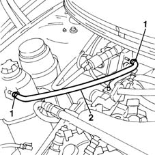
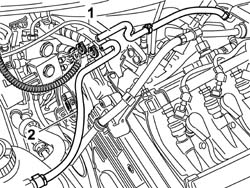

1088D70 CNG INJECTION SYSTEM PRESSURE REDUCTION UNIT COOLING CIRCUIT PIPE(1) - R R
- Path
- Procedures > 10 ENGINE UNIT > 1088 ENGINE COOLING > 1088D COOLANT HOSES AND SLEEVES > 1088D70 CNG INJECTION SYSTEM PRESSURE REDUCTION UNIT COOLING CIRCUIT PIPE(1) - R R
- Kind
- repair procedure (removal / refitting; the operation number is the code)
- Applies to
- engines: 1.6 16v; all production periods; only with equipment: BIPOWER and BLUPOWER
- Interactive page
- https://sloeber94.github.io/elrnDB-fMltpl/en/#/2891487
Applies to: engines: 1.6 16v; production: fino a 05/04; only with equipment: BIPOWER and BLUPOWER
 Removing
Removing
 Refitting
RefittingOpen the bonnet lid.
1. Remove the retaining bands on the pressure reducer and the expansion tank.
2. Remove the pipe for the pressure reducer cooling circuit.

Applies to: engines: 1.6 16v; production: fino a 05/04; only with equipment: BIPOWER and BLUPOWER
Refitting
RemovingFit the pressure reducer cooling circuit and, using new bands, secure it to the expansion tank and to the actual reduction unit.
Close the bonnet lid.
Applies to: engines: 1.6 16v; production: da 06/04; only with equipment: BIPOWER
Removing
RefittingOpen the bonnet.
1. If an operation has to be carried out on the pipe illustrated, disconnect the bands on the pressure reduction unit and on the throttle casing.
2. If an operation has to be carried out on the pipe illustrated, disconnect the bands on the pressure reduction unit and on the expansion tank.

Applies to: engines: 1.6 16v; production: da 06/04; only with equipment: BIPOWER
Refitting
RemovingFit the pipe for the pressure reduction unit cooling circuit and, using new bands, secure it to the expansion tank and to the actual reduction unit or, if the other pipe has been removed, connect it to the pressure reduction unit and to the throttle casing.
Close the bonnet.